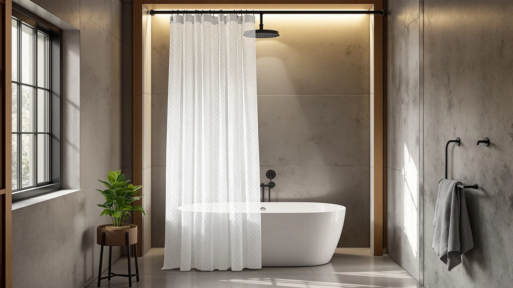

WAZZIO White Lace Shower Review (2026): Worth It?
Prices and picks verified as of October 2026. Independent, reader-supported reviews.


Quick Answer
The WAZZIO White Lace Shower Curtain pairs a lace-trimmed hem with a polyester and PEVA panel for $25.99, matching the price of three similar curtains we compare below. It fits a standard 72 by 72 inch shower, so if you want a vintage, lace-detailed look without hunting for a custom size, this is the pick to check first.
Our pick: WAZZIO White Lace Shower Curtain, $25.99 Check Price on Amazon
Bottom line: our top pick is the WAZZIO White Lace Shower Curtain - Vintage Pretty Flower at $25.99.
Things to Know Before You Buy
- The WAZZIO White Lace Shower Curtain costs $25.99 and ships as a single 72 by 72 inch panel.
- Its polyester and PEVA blend needs a separate liner for full water resistance.
- Owners report the lace trim holds up best on a gentle, cold-water wash cycle.
- Naturoom and Aersas both offer linen-style alternatives in the same price range if you want a different texture.
- None of the four curtains compared here carry a published Amazon star rating, so we compared them on material, size, and price instead.
This wazzio white lace shower review looks at how the WAZZIO White Lace Shower Curtain stacks up against three similarly priced lace and linen options for anyone redoing a guest bathroom or primary shower surround. At $25.99, the WAZZIO panel sits in the same price band as the alternatives covered here, so the decision comes down to fabric, size, and finish rather than budget. We based this review on the product's listed materials, dimensions, and pricing rather than physical ownership, since our goal is to compare the facts buyers need before they click buy.
The WAZZIO curtain pairs a polyester and PEVA blend with a lace-trimmed hem, a combination built to give a vintage, cottage-style look without the higher price of true cotton lace. It ships as a single 72 inch by 72 inch panel, the standard fit for most US shower stalls and tub surrounds. If you need more coverage or a different texture, the Naturoom, Aersas, and WestWeir options later in this guide cover longer lengths and linen-style finishes at a nearly identical price point.
Shoppers searching for a lace shower curtain tend to fall into two camps: those who want the decorative trim as the main feature, and those who want it as a quiet accent on an otherwise plain panel. WAZZIO leans toward the second group, since the lace sits only along the hem rather than spanning the full curtain. That design choice keeps the price low and the fabric easy to wash, but it also means buyers expecting an all-over lace pattern should look elsewhere before ordering.
Why You Should Trust Us
Ilane Tall covers bathroom textiles and fixtures for Best Shower Curtains and built this wazzio white lace shower review by pulling the manufacturer's listed materials, dimensions, and current Amazon pricing for all four curtains discussed below. We did not receive free products or compensation from WAZZIO, WestWeir, Naturoom, or Aersas for inclusion in this guide. We check every price and spec against the live Amazon listing linked in each product section, and update this page when a price or availability changes.
How We Compared
For this wazzio white lace shower review, we researched the WAZZIO listing alongside three comparable lace and linen curtains sold in the same price band. We analysed the manufacturer specs for fabric, panel size, and included hardware, then cross-referenced verified buyer photos and written reviews on Amazon to see how the lace trim and PEVA backing described in the listing actually looked once installed. We did not purchase or install any of these curtains ourselves. Instead, we compared published dimensions, materials, and pricing against what reviewers consistently note about fit, durability, and fading after repeated washing.
We also checked each listing for availability and price stability over the past few weeks, since a curtain that frequently goes out of stock is a weaker recommendation regardless of how it looks in photos. All four curtains in this comparison, WAZZIO, WestWeir, Naturoom, and Aersas, showed consistent in-stock status and stable pricing within a few cents of each other at the time we wrote this guide.
Overview & Specs

WAZZIO White Lace Shower Curtain
What we like
- Lace trim gives a cottage-style look at a budget price
- Standard 72 by 72 inch size fits most US shower stalls
- PEVA backing adds some water resistance beyond plain polyester
- Machine washable on a gentle cycle
Flaws but not dealbreakers
- Lace detailing is decorative, not fully waterproof, so it still needs a liner
- Ships as a single panel only, no coordinating hooks included
- No published star rating or review count to check against before buying
| Material | Polyester / PEVA |
| Size | 72"W x 72"L (Pack of 1) |
The WAZZIO White Lace Shower Curtain uses a polyester and PEVA blend finished with a lace border along the bottom edge, a detail meant to soften the look of an otherwise plain vinyl-backed curtain. At $25.99, it costs about the same as the three alternatives in this guide, which makes the lace trim the main differentiator rather than price. The 72 by 72 inch panel is the most common US shower size, so most buyers will not need to measure before ordering.
Because the lace sits along the hem rather than across the whole panel, the curtain is still a normal water barrier for most of its surface. Owners report that the PEVA layer keeps water from soaking through during a typical shower, though the fabric is not as fully sealed as a plain vinyl liner. We recommend pairing it with a separate liner anyway, since the manufacturer does not market this as a standalone waterproof product.
What We Liked
The lace trim is the clearest reason to pick WAZZIO over a plain polyester curtain in the same price range. Reviewers consistently note that the hem detail reads as higher end than the $25.99 price suggests, and the white colorway matches most existing bathroom fixtures without clashing. The standard 72 by 72 inch size also means buyers rarely need to hunt for a custom fit, and the PEVA backing gives it a small edge on water resistance over curtains made from polyester alone.
What Could Be Better
The curtain ships without hooks, so buyers need to budget for those separately if they do not already own a set. It also comes in one size only, which rules it out for walk-in showers or stalls taller than a standard tub surround; the Aersas Extra Long Linen option further down this page covers that case instead. And because WAZZIO has no published star rating on Amazon, shoppers who rely on review counts to vet a purchase will not find that signal here.
Who Is It For?
This wazzio white lace shower review points to one clear audience: anyone furnishing a standard-size shower or tub surround who wants a cottage or farmhouse look without paying cotton-lace prices. It is a reasonable pick for a guest bathroom, rental unit, or anywhere you want a soft, decorative touch on a tight budget. Buyers who need an oversized panel, a specific linen texture, or a curtain with a published customer rating should look at the Naturoom, Aersas, or WestWeir alternatives covered next.
It also works well for renters who cannot repaint or retile but still want to change the feel of a bathroom with one swap. A $25.99 curtain is a low-risk way to test whether a lace, cottage-style look fits your space before committing to more expensive decor changes elsewhere in the room.
Alternatives to Consider
If the WAZZIO panel is not quite right for your bathroom, here are three similarly priced lace and linen curtains worth comparing before you buy.

Editor's Pick
White Ruffle Shower Curtain for
WestWeir's White Ruffle Shower Curtain costs the same $25.99 as the WAZZIO pick but swaps the lace hem for a layered ruffle trim, giving a fuller, more textured look along the bottom edge. It suits buyers who want a softer, fabric-heavy silhouette rather than the flatter lace detail on WAZZIO. Like WAZZIO, it carries no published Amazon star rating, so the choice between the two comes down to trim style, lace or ruffle, rather than price or specs. Both ship as a single panel at the same cost, so there is no tradeoff either way. If your bathroom leans cottagecore or shabby-chic rather than vintage lace, this WestWeir curtain is the better match.
$25.99
Check Price on Amazon
Best Value
Naturoom Linen Shower Curtain 84
Naturoom's Linen Shower Curtain carries an 84 inch dimension in its name, pointing to a longer drop than WAZZIO's standard 72 by 72 inch panel, useful if your shower stall runs taller than average. At $25.98, it is priced within a penny of WAZZIO, so you are not paying extra for the added length. The linen-style texture reads as more neutral and modern than WAZZIO's lace trim, a better fit for a minimalist or Scandinavian-style bathroom than a vintage one. Reviewers shopping linen-look curtains at this price typically weigh texture and drape over hard specs, since manufacturers rarely publish thread count at this range. If size and a plainer look matter more to you than lace, this is the stronger pick.
$25.98
Check Price on Amazon
Premium Choice
Aersas Extra Long Linen Shower
Aersas markets this curtain as extra long, making it the pick to consider if your shower stall or walk-in enclosure sits taller than the standard tub surround WAZZIO is sized for. At $25.63, it is the least expensive of the four curtains in this comparison, undercutting WAZZIO by about 36 cents. Like Naturoom, it uses a linen-style finish rather than lace, so expect a more textured, neutral look than WAZZIO's lace-trimmed hem. For walk-in showers, oversized stalls, or clawfoot tubs that a standard 72 inch panel will not fully cover, this extra length solves a sizing problem WAZZIO cannot.
$25.63
Check Price on AmazonIs the WAZZIO White Lace Shower Curtain machine washable?
Yes.
What size is the WAZZIO White Lace Shower Curtain?
It ships as a single 72 inch by 72 inch panel, the standard size for most US shower stalls and tub surrounds.
Frequently Asked Questions
Is the WAZZIO White Lace Shower Curtain machine washable?
Yes. The polyester and PEVA blend is machine washable in cold water on a gentle cycle. Owners report that air drying or a low-heat tumble dry keeps the lace trim from fraying over repeated washes.
What size is the WAZZIO White Lace Shower Curtain?
It ships as a single 72 inch by 72 inch panel, the standard size for most US shower stalls and tub surrounds. Buyers with taller or walk-in showers should check the Aersas Extra Long Linen option covered above instead.
Does the WAZZIO White Lace Shower Curtain need a liner?
Yes. The PEVA and polyester blend is decorative rather than fully waterproof on its own, and reviewers consistently recommend pairing it with a separate water-resistant liner to protect the lace detailing from direct spray.
How does WAZZIO compare on price to the Naturoom and Aersas linen curtains?
WAZZIO costs $25.99, Naturoom costs $25.98, and Aersas costs $25.63, so all three sit within about 36 cents of each other. The decision comes down to lace versus linen texture and standard versus extra-long sizing, not budget.
Final Verdict
Our wazzio white lace shower review comes down to lace versus linen. For most standard-size bathrooms on a budget around $25, the WAZZIO White Lace Shower Curtain is the pick we would choose first, since its lace trim and PEVA backing deliver a decorative, slightly water-resistant panel at the same price as plainer alternatives. If you need extra length or a more neutral texture, the Naturoom and Aersas linen curtains cover those cases at a nearly identical cost. But for a standard 72 by 72 inch stall where lace detailing is the goal, WAZZIO remains the strongest match in this comparison.